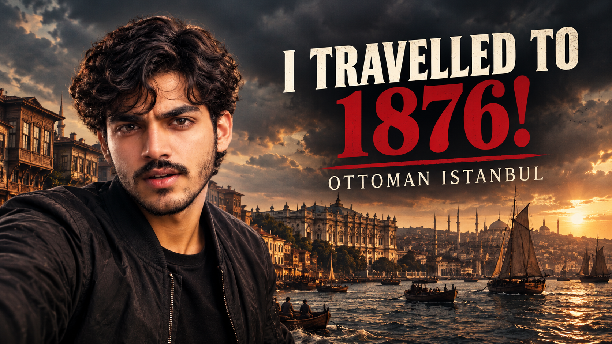

Bismillahir Rahmanir Raheem
In the name of Allah, the Most Gracious, the Most Merciful
HISTORY ISN'T GONE.
IT'S BURIED.
Exploring the untold stories, global conflicts, and mysteries that shaped our world through premium cinematic documentaries.
Latest Release
Watch on YouTube →
AI TIME-TRAVEL VLOG
ERA: 1876 OTTOMAN EMPIRE
I TRAVELLED TO 1876! — OTTOMAN ISTANBUL
I travelled back in time to 1876 Ottoman Istanbul through AI historical time-travel vlogging—experiencing the imperial streets, Bosphorus shores, and living history of the Ottoman Empire firsthand.
▶ Watch Full Video on YouTube